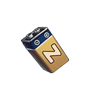

Получено: файл; исходный URL. Иллюстрация подписана «Батарейка» в статье Zombie-island. Статья ссылается на аналогичный файл на zombicity.info; побайтовая идентичность не проверена. Страница: источник.
Батарейка
Историческая браузерная игра; платформа и даты правок не установлены.- Тип
- Материал
- Покупка
- По Zombie-island и FatalGame: 1 зомбакс; историческая цена, актуальность неизвестна.
- Продажа
- По Zombie-island: 2000 монет; отдельно не сверено.
- Как получить
- По Zombie-island — обмен Футбольной коллекции и раскопки под Флагом Милана; FatalGame также называет флаг и Вишнёвый сюрприз. Выпадение не гарантируется.
- Применение
- По двум статьям: Коллайдер, Планетарий и другие постройки; точные количества требуют проверки.
- Особенности
- Не путать с супер-батареей или металлоломом в виде батареи.
- Версия и дата
- Историческая браузерная игра; платформа и даты правок не установлены.


Данные по источнику · браузерная игра; сеть не указана · 2012-07-17 — дата URL; статья содержит более поздние дополнения, дата редакции неизвестна
Предварительно: Покупка за 1 зомбакс, Флаг Милана и Вишнёвый сюрприз совпадают с FatalGame; независимость не установлена, остальное отдельно не сверено.. Требуется сверка.
- Стоимость
- Покупка 1 зомбакс, продажа 2000 монет; актуальность неизвестна.
- Получение
- Футбольная коллекция, Флаг Милана, Вишнёвый сюрприз и Морской ёжик.
- Применение
- Среди перечисленных построек — Коллайдер, Планетарий, Батискаф и Летучий корабль.
Данные по источнику · браузерная игра; сеть не указана · 01.04.2015 — дата статьи; дата последних правок неизвестна
Предварительно: Выборочное совпадение с Zombie-island не доказывает независимости источников или актуальности условий.. Требуется сверка.
- Получение
- Покупка за 1 зомбакс, раскопки под футбольным флагом и Флагом Милана, Вишнёвый сюрприз; также названы задания «Прорыв» и «Зомби на футболе».
- Применение
- Названы Коллайдер, Планетарий, Батискаф и другие постройки; количества не указаны.
Связанные сущности
нет проверенных связей — требуется сверка.